A 360 brand marketing and integrated marketing communications co-op at SharkNinja, spanning packaging, retail collateral, email marketing, paid social, social video, and CGI content strategy for the Shark Hardfloor product line.
01 · The Role
I was a Brand Marketing and IMC co-op on SharkNinja's Hardfloor team, where I worked across the full spectrum of marketing - from the packaging consumers see on shelves to the social content that builds community around the product.
Every project was a real deliverable with real deadlines, real legal constraints, and real cross-functional stakeholders. The role demanded the ability to switch between meticulous detail work - checking every disclaimer on a package - and big-picture strategic thinking, like identifying a gap in our social content and creating a solution from scratch.
02 · Email Marketing
We needed to drive awareness for our 2025 NPD through a post-launch emailer while navigating late legal updates that restricted validated claims, creating messaging challenges under tight timelines.
I developed a revised messaging brief and collaborated cross-functionally to execute it. To address legal constraints, we used a media-first approach: icons, GIFs, and visual cues to communicate key features without unverified claims, ensuring an impactful and on-time launch.
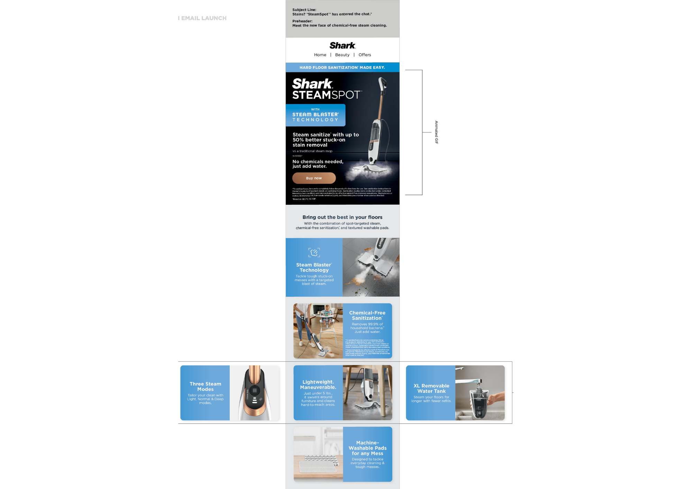
Approved claims were pulled days before launch with no timeline extension. Legal, brand, creative, and email teams all had to align on a revised approach simultaneously. The pivot to visual-only messaging could have felt like a downgrade, but the brief ensured the icons and GIFs elevated the product instead of diminishing it.
03 · Amazon Gallery and A+ Content
Third-party sellers were dominating sales of our steam replacement pads on Amazon. Despite Shark being the genuine manufacturer, unofficial listings were outranking the official product.
I studied competitor listings to pinpoint what earned customer trust, then crafted creative and strategic messaging to restore confidence. By emphasizing Shark Genuine badges and a clean visual hierarchy, I made the information clear, credible, and impactful.
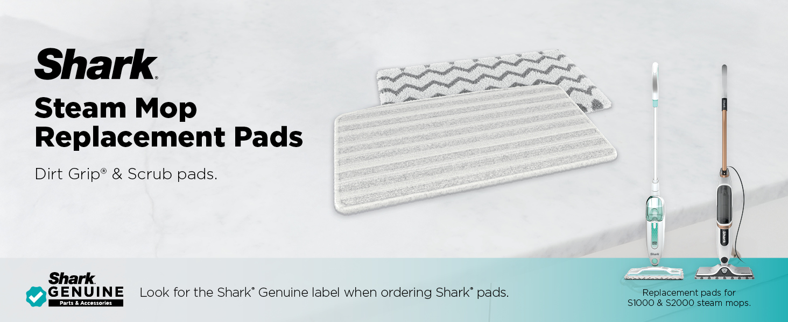
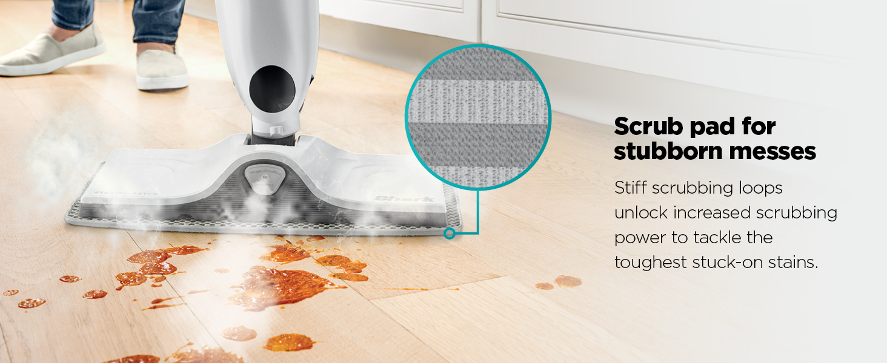
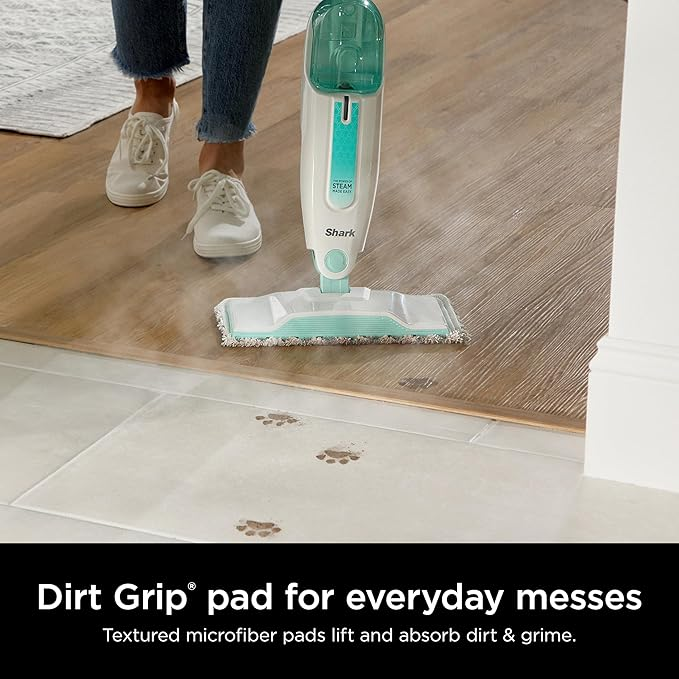
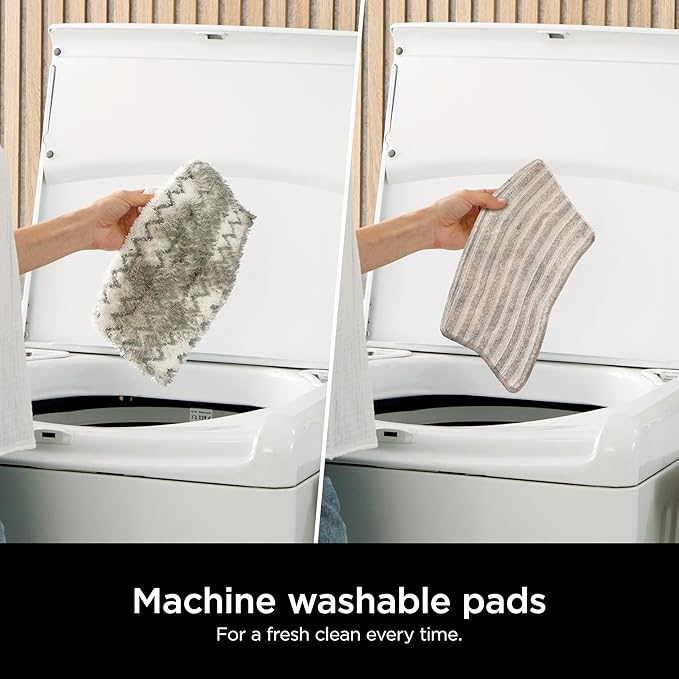
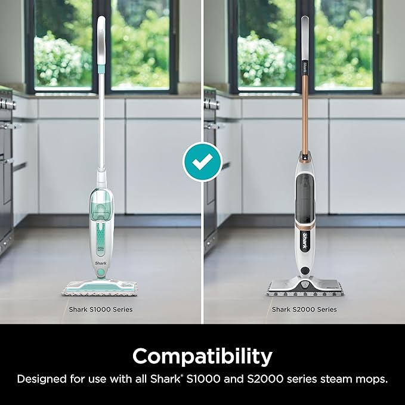
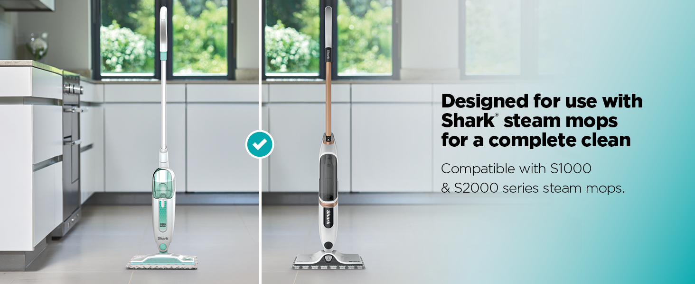
04 · CGI Creative Brief
Four new attachments launched for TikTok Shop and Amazon with limited existing assets. The original product lacked high-quality imagery, and budget constraints prevented a new photoshoot.
We leveraged CGI as the primary visual strategy. I developed a creative brief informed by competitive analysis. We enhanced CGI visuals with realistic elements - dirt, grime, spills, and steam effects - to demonstrate performance. We used brighter, modern color accents to appeal to younger audiences and align with TikTok Shop aesthetics.
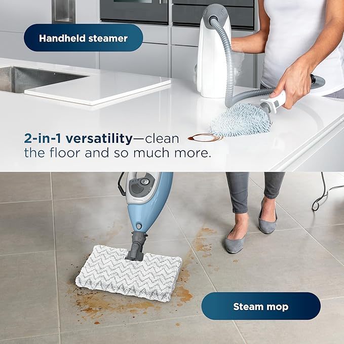
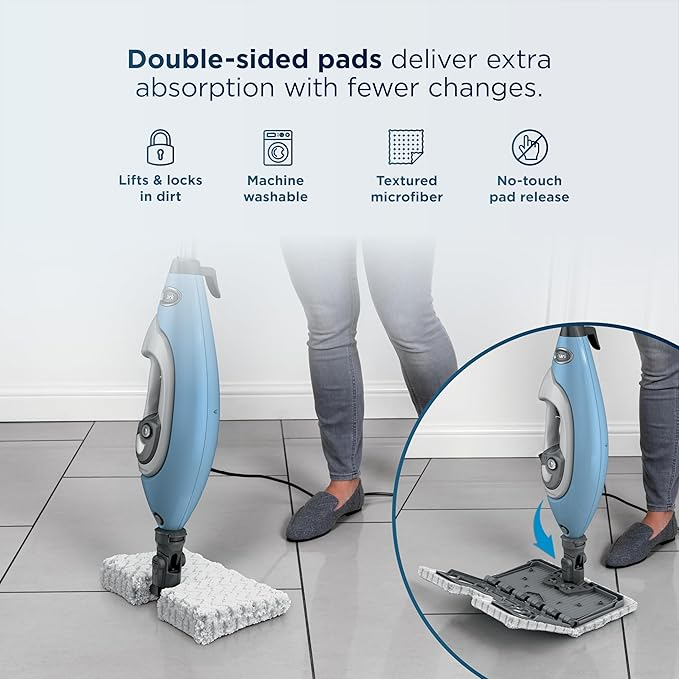
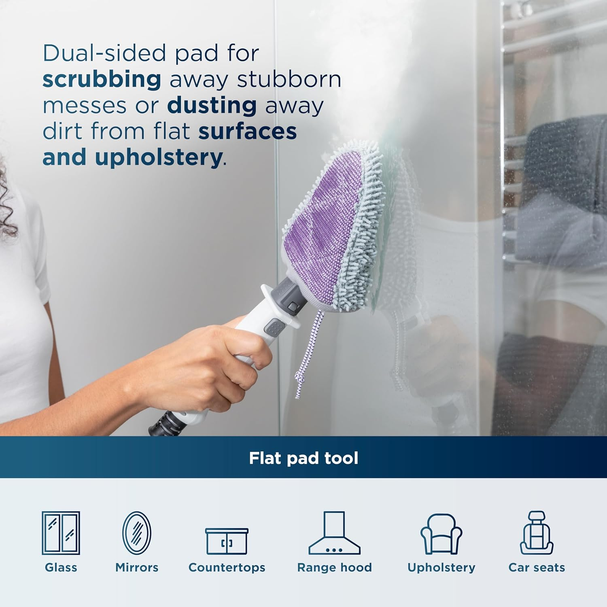
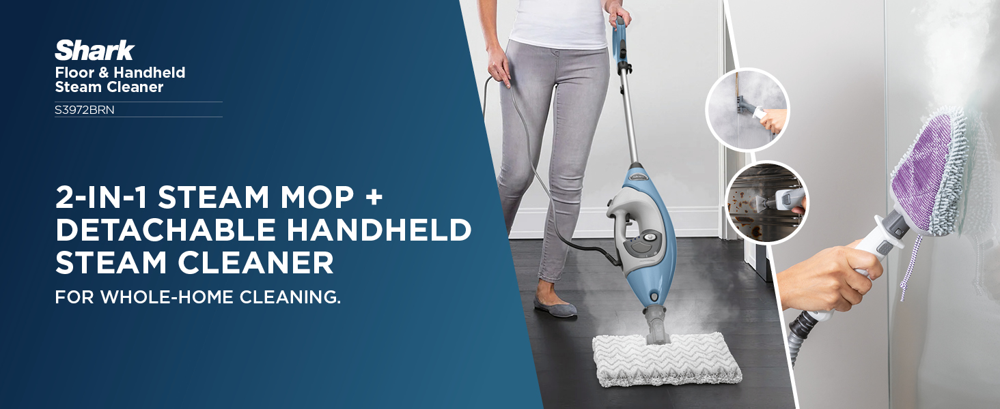
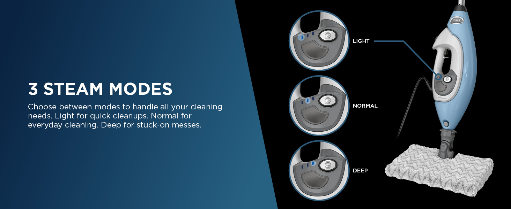
Making CGI feel real enough to earn consumer trust on product pages that live next to competitor photography. The brief specified adding realistic grime, steam wisps, and wet floor reflections to every hero shot.
Two distinct visual treatments were needed - one for TikTok Shop's younger, trend-forward audience and one for Amazon's information-dense listing format - while keeping all four attachments feeling like part of the same product system.
05 · More Projects
A global supply chain shift due to US tariffs moved production from China to Vietnam. I helped implement the boilerplate update across all hardfloor packaging assets, ensuring accuracy at every consumer touchpoint.
View packaging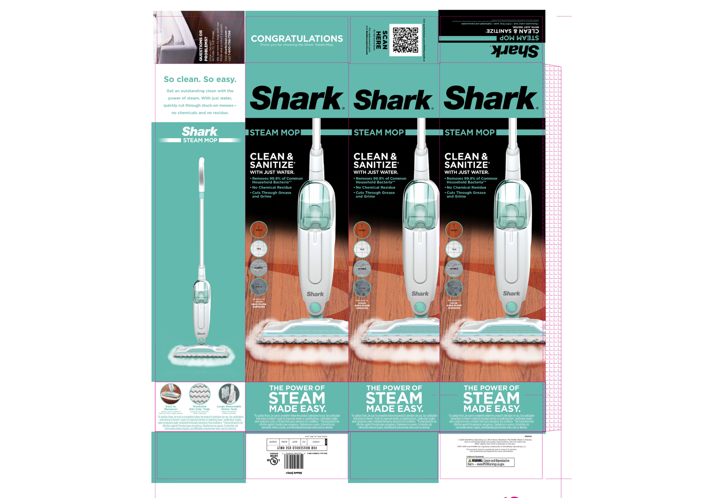
Supported quick visual and copy updates to promo videos for an Amazon sale. Balanced speed with accuracy across creative iterations. Campaign launched on schedule.
View ad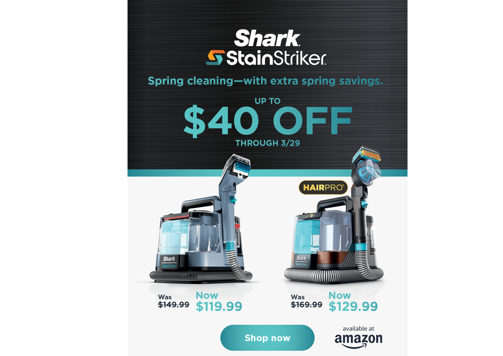
I noticed the Steam Blaster feature wasn't represented in social content for the S2001 and took the initiative to create a DIY demo at home, filling a content gap for the social team.
View video06 · Skills and Tools
Aishwarya Sivakumar · SharkNinja Brand Marketing and IMC Co-op · Needham, MA